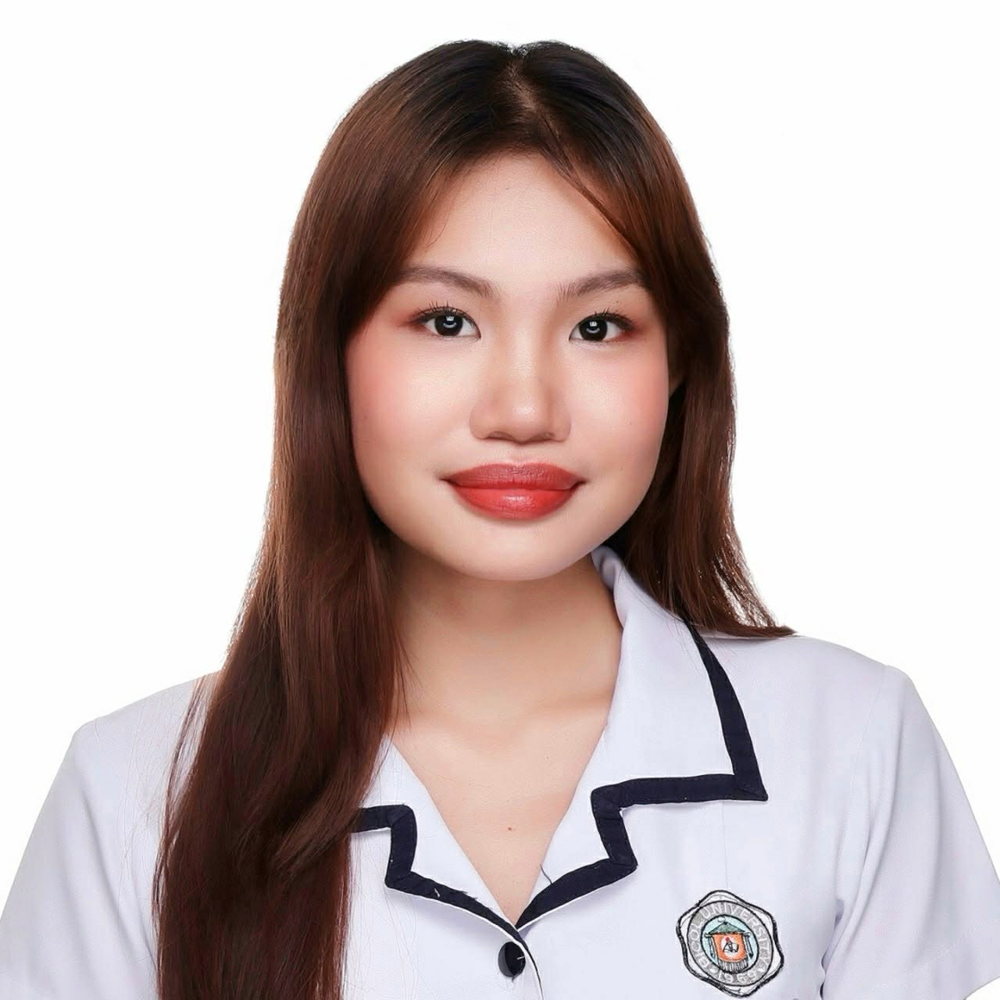
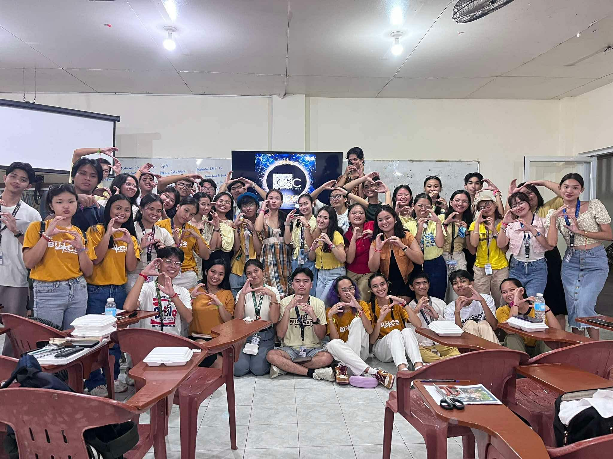
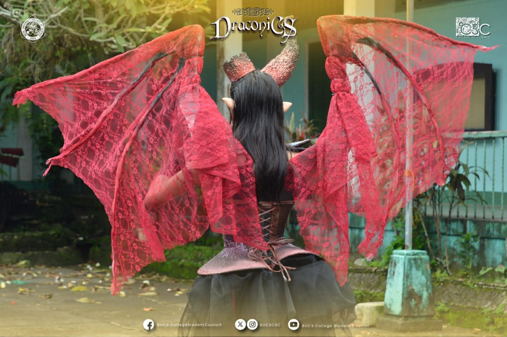
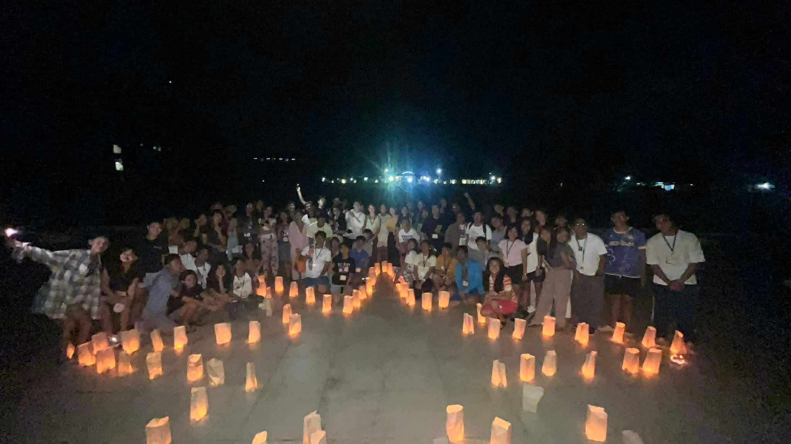
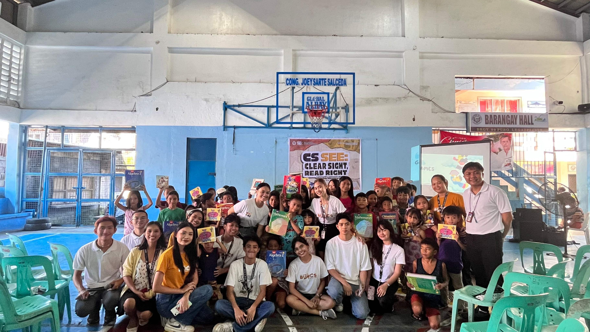
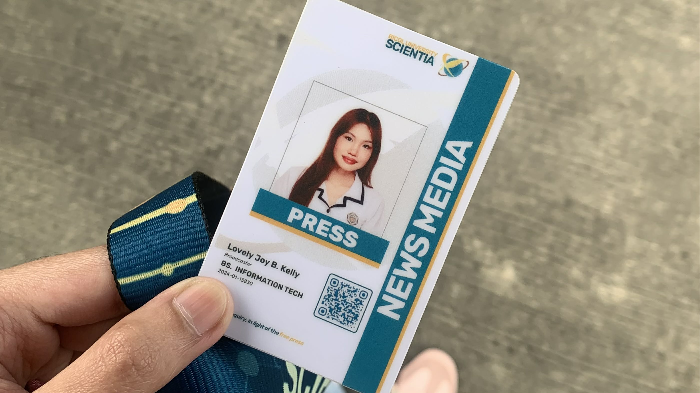
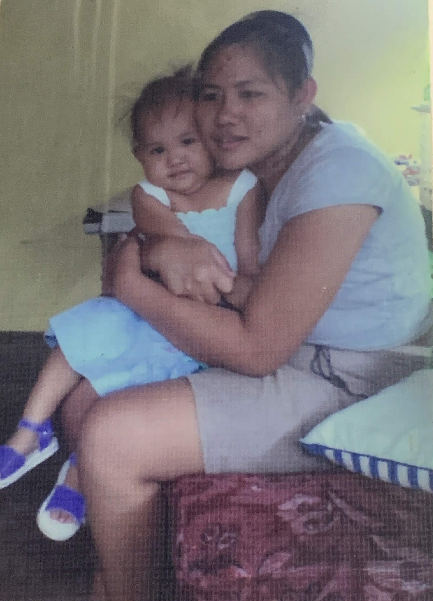
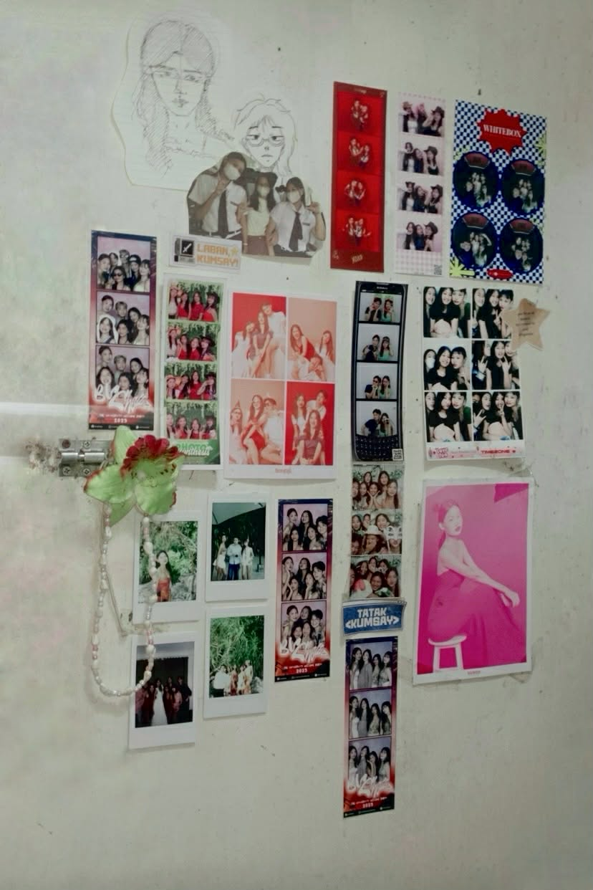
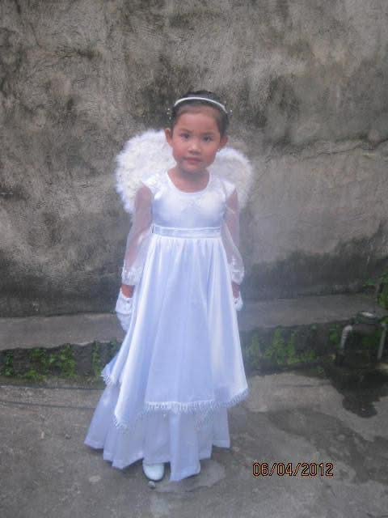

Here highlights everything I love and who I'm becoming. All the things that make me curious, the work that keeps me up at night, the ideas I can't stop chasing — this is where they live. A space that grows as I grow, changes as I change, and reflects everything I'm still figuring out.

Hi! I'm Lovely Kelly — a 2nd year Bachelor of Science in Information Technology student at Bicol University with a curiosity that never really switches off. I'm someone who finds joy in the little things: stumbling across a new idea, getting lost in a good book, or discovering a trail I've never walked before. This space is my little corner of the internet, and I'm glad you found it.
I'm navigating the world of code and design, finding my footing one project at a time. Outside of tech, I'm drawn to art in all its forms — whether that's sketching, appreciating someone else's work, or finding beauty in the everyday. Going on walks is my reset button, and writing is how I make sense of everything in between.
I'm a creative at heart and a builder by choice. I love expressing myself through the things I make — websites, ideas, words on a page. I'm passionate about growing not just as a developer, but as a person. Every new skill I pick up, every challenge I push through, feels like another step toward the version of myself I'm working to become.
As technology evolves, so do I. I'm eager to explore more of what the IT world has to offer — from design and development to whatever new frontier comes next. I don't have it all figured out yet, and I think that's the best part. This journey is still unfolding, and I'm here for every bit of it.
My days are shaped by small joys and quiet curiosities. You'll often find me deep in a series, a kdrama, or an anime I swore I'd only watch one episode of, and books and manga have a similar grip on me. Cafés are my favorite places to exist in, whether I'm sketching in a corner or just soaking in the atmosphere.
I write too, on Medium and Substack, because putting words to things is how I process the world. I love card games and scrabble too! Podcasts keep me company on my walks, which are basically my reset button. When I'm not moving, I'm probably playing Genshin Impact (casually, though my unfinished quests would say otherwise).
Badminton is my sport of choice for now, but volleyball has been catching my attention. Crocheting and knitting are next on my list of things I want to sit down and actually learn. And yes, I collect stickers and keychains, because some things just deserve to be held onto.
Lately I've been pulling toward graphic design, UI, and networking as a career path, spaces where creativity meets intention. I also love learning new recipes, mostly because potatoes exist and there are infinite ways to honor them.
Interests and hobbies

Accepted as a Junior Councilor in the College of Science Council, taking on a role in student governance and representation.

Represented the College of Science in BUEncanta, stepping onto the stage and showing up for the department with confidence.

Participated in a leadership development program, building skills in communication, teamwork, and student leadership.

Volunteered in an outreach program, helping organize and extend support to the community alongside fellow students.

Served as a broadcaster for Scientia, covering university events and sharing stories through media and on-the-ground reporting.
Not every milestone came easy, and not every step felt certain. But each one was taken anyway. From small quiet victories to bigger, louder ones, every achievement holds a version of me that chose to show up even when it was uncomfortable. And with every step, the drive only grows stronger.
The little moments like raising my hand, saying yes, and walking into a room full of strangers were the ones that built the foundation for everything bigger that followed.
The more I accomplish, the more I realize how much further I want to go. Each achievement isn't an ending. It's a reminder that I'm capable of more than I thought. To more oppurtunies ahead!
Here's where I share a bit more about my life, my journey, and what inspires me every single day. Words are how I process the world — from grand adventures to quiet mornings with a cup of tea. I've spent a lot of time learning to pay attention — to what moves me, what challenges me, and what quietly shapes who I'm becoming. This is where I document that unfolding: the questions I'm sitting with, the things I've grown to love, and the moments that remind me why showing up fully matters.
My mom isn't just someone I love, she's someone I deeply admire. We're not without our rough patches. We argue, we misunderstand each other, and sometimes the tension is real. But so is the love — and it has always, always been louder than the rest. That's the kind of bond that doesn't break. It just bends, stretches, and always finds its way back. As a mother's love, it's the kind that's always there, always present, and always strong. It's the kind that keeps me going, even when I'm feeling lost, or when I'm just trying to find my way.

There's a specific kind of love that lives in friendship — quieter than romance, less talked about, but just as deep. These are the people who've seen me unfinished and stayed anyway. Who've laughed with me, sat in silence with me, and gently pushed me back toward myself when I lost my way. They didn't just shape my idea of love. They became the definition of it. I keep this corner in my room filled with them as a reminder that I am full of love, especially on the times I need it most.

There's a younger version of me that I think about often — wide-eyed, unguarded, full of dreams she hadn't learned to second-guess yet. She had this quiet stubbornness in her, a belief that things would work out and that she was meant for something, even when the world hadn't given her much proof yet. On the hard days, she's who I return to. She's the reminder of where I started and how far I've come — a quiet nudge to never lose sight of the part of me that remembers what really matters, before the noise of life gets too loud.

The places, the music, the quiet rituals and the loud memories — they all had a hand in making me who I am. I didn't choose them, but I'm grateful for every single one.
And then there are the things I'm choosing now — the habits, the dreams, the people I'm becoming through. This version of me is still very much under construction, and I'm learning to love every bits of it.